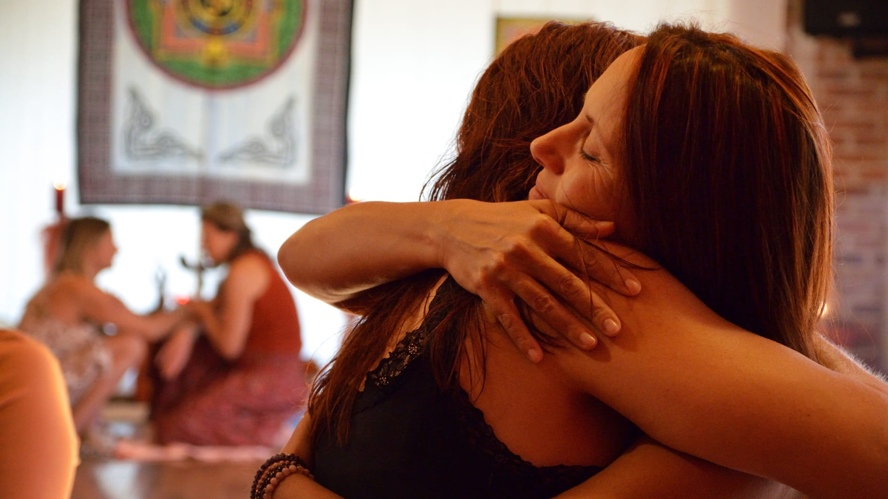
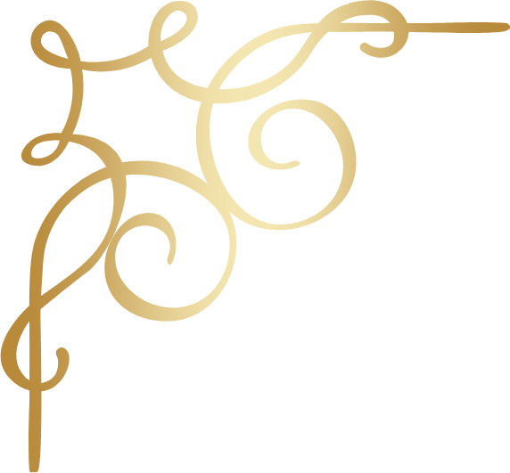
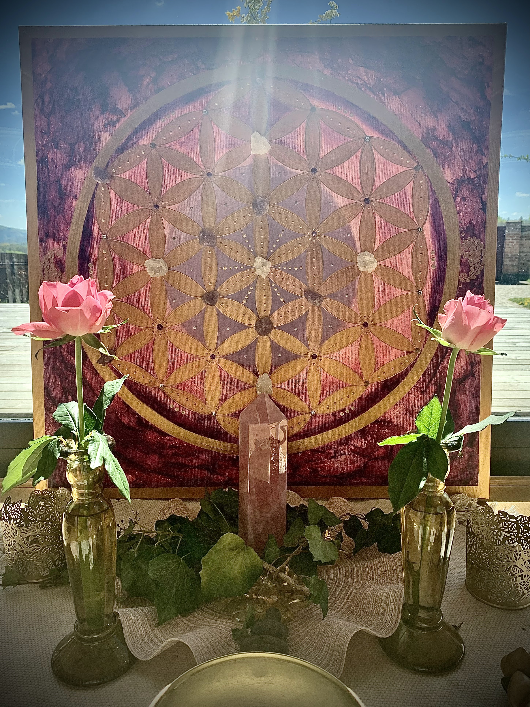
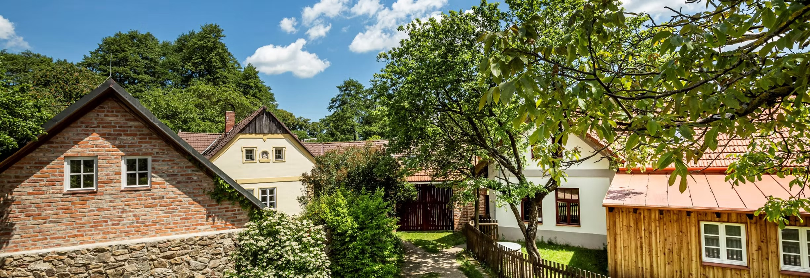
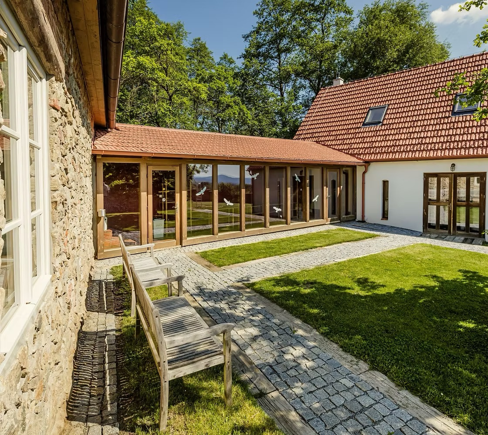
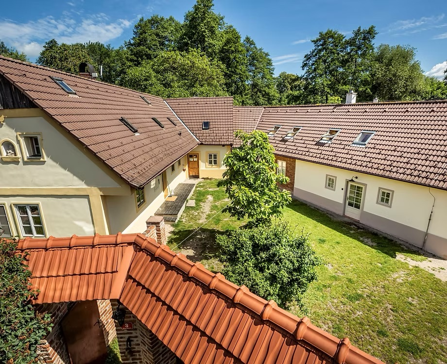
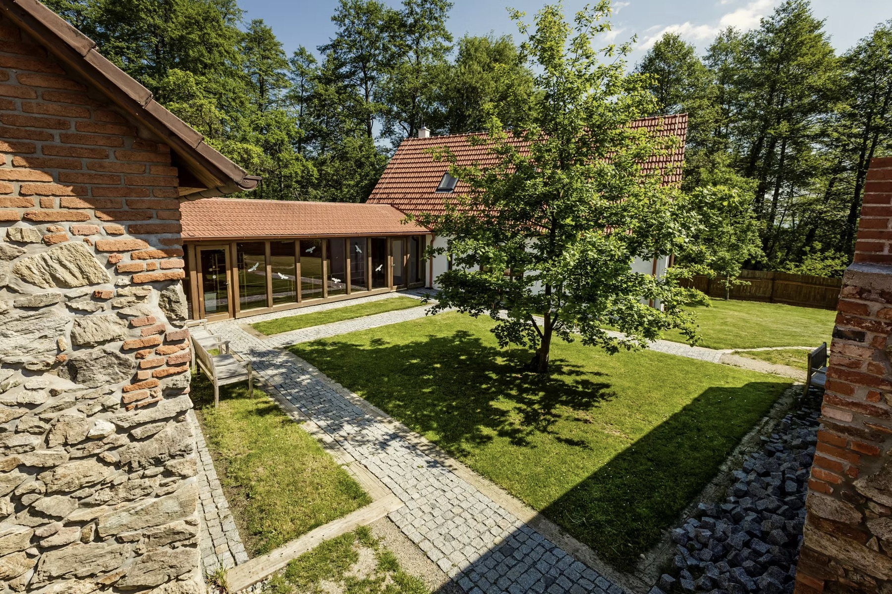
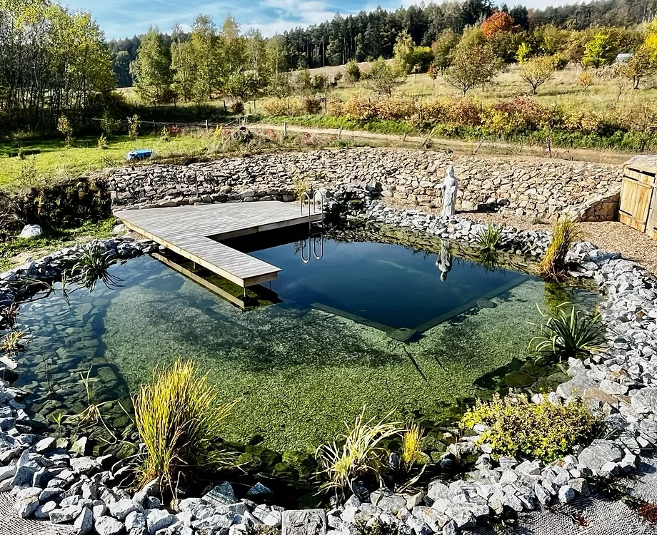
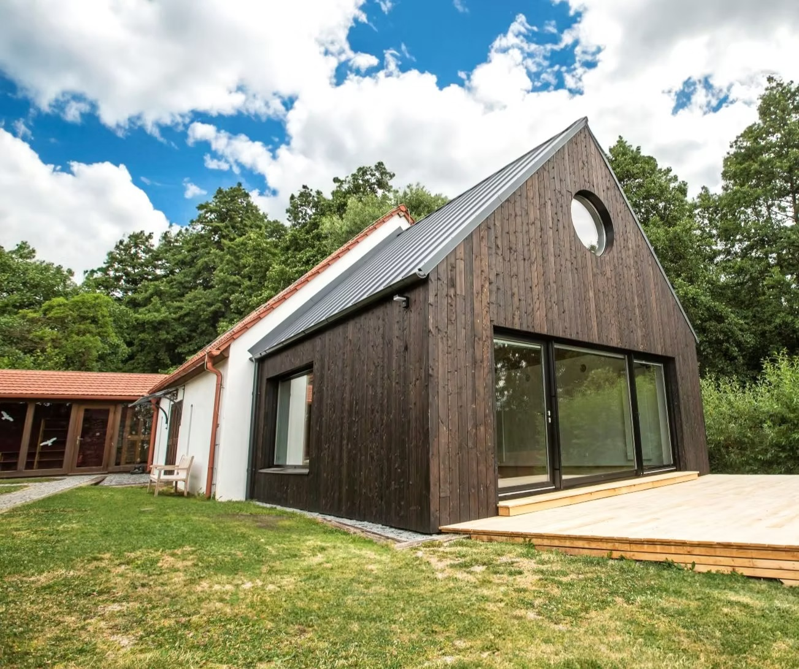
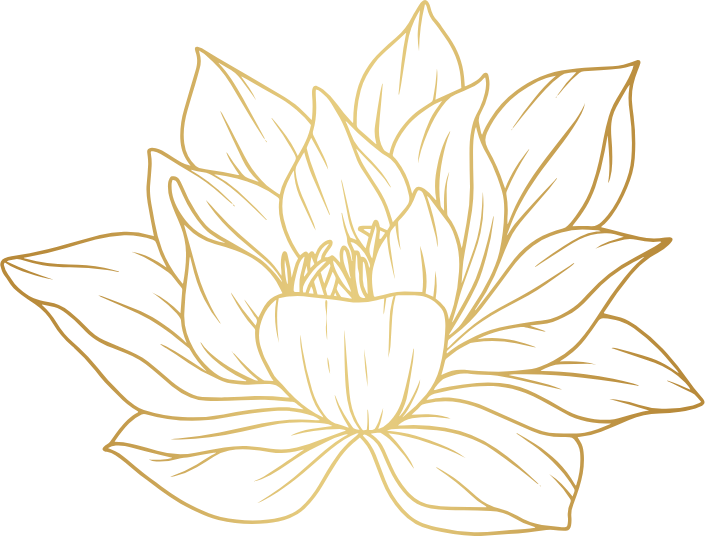

Mysterijní škola jako návrat k sobě
Mysterijní škola ženství je prostorem návratu k ženské podstatě skrze tantrické umění lásky, vědomí a vnitřního poznání.
Tantra je učením skutečné lásky a svobody. Posvátným spojením těla, duše a Božského vědomí, které vede skrze prožitek, vnitřní transformaci a návrat k duchovním principům ženství.
Tato cesta tě vede k otevření intimního hlubokého vztahu sama k sobě. Ke vstupu do prostoru srdce, spojení se svým lůnem a naslouchání vnitřnímu hlasu intuice. Postupně můžeš probudit svou životní energii, otevřít se větší harmonii, lásce a stát se vědomou tvůrkyní vlastního života.


Co je autentická Tantra?
Se slovem Tantra se setkáváme stále častěji, přesto kolem něj přetrvává mnoho nepochopení a obav. Na západě bývá spojována především se sexualitou a tělesným potěšením. To je ale jen málo z mnohem hlubší tradice.
Pro ženu je tantrická cesta pozváním k návratu do vlastní přirozenosti, k rozpomenutí si, kým ve skutečnosti je. K probuzení citlivosti, tvořivosti, magnetismu a síly srdce. A k uvolnění z neustálé kontroly do důvěry a odevzdání.
V tantrické tradici jsou Shiva a Shakti symbolem dvou doplňujících se principů: vědomí a tvořivé síly. Jejich sjednocením vzniká posvátná harmonie, ve které se mužské a ženské kvality vzájemně probouzejí. Když se žena otevírá své podstatě Shakti, prožívá hlouběji svou smyslnost, intuici i schopnost odevzdání. A ve vztahu s vědomým mužem se to může stát společnou cestou růstu.
Autentická Tantra je cestou vědomí, otevřeného srdce, posvátnosti života a návratu domů.
Skutečnou otázkou, kterou Tantra přináší, je
Kdo jsem ve své nejhlubší podstatě?

Postupné otevírání vrstev ženství
Každý ze čtyř modulů školy je prostoupen vědomě vytvořenou praxí, která je jemně naladěna na téma daného modulu. Jednotlivé techniky na sebe navazují v harmonickém toku tak, aby ses mohla postupně otevírat hlubšímu vnímání svého těla, emocí, vědomí i duchovní podstaty.
Skrze meditaci, dech, vědomý pohyb, tantrické techniky, ženské rituály, sdílení i práci s energií se učíš spočívat ve větší přítomnosti, citlivosti a důvěře sama v sebe.
Témata jednotlivých modulů jsou propojena s energetickými centry čakrového systému. Každý modul otevírá kvality a dary příslušné čakry a podporuje hlubší spojení se sebou samou.
Každý modul obsahuje čtyřdenní osobní setkání a navazující online podporu, která umožňuje integraci celé zkušenosti do každodenního života.
Prostor důvěry, citlivosti a respektu
Jemný a vědomý prostor
Vstupuješ do posvátného kruhu, kde postupně odložíš napětí, stud, vnitřní obrany i staré příběhy spojené s tělem, ženstvím a intimitou. Vše je vedeno s hlubokou úctou k ženské citlivosti, přirozenosti a jedinečnosti každé ženy.
Návrat do těla a důvěry
Tantrické a vědomé praxe jsou pozváním k návratu do těla jako chrámu vědomí, k hlubšímu vnímání sebe, své energie, emocí i schopnosti otevřít se důvěře, jemnosti a pravdivosti. Tělo se stává místem bezpečí, nikoli výkonu.
Respekt k hranicím
Každá žena si sama volí, do čeho chce vstoupit, a její hranice jsou plně respektovány. Vědomá komunikace a možnost říci „ano", „ne" či „teď ještě ne" je přirozenou součástí celé cesty. Vše je prostoupeno energií ženské podpory a vzájemného respektu.
Centrum Buchov
Škola probíhá v centru Buchov, v prostoru obklopeném romantickou přírodou středočeské krajiny na dohled od bájné hory Blaník. Okolní louky, lesy a hluboký klid přírody přirozeně podporují ztišení, vnitřní ponoření i jemné otevření ženského vnímání.
Atmosféra Buchova podporuje hlubší propojení se sebou samou, s rytmy přírody i s přirozeným plynutím celé iniciační cesty. Součástí prostoru jsou sály pro společnou praxi, ubytování, zahrady, venkovní místa pro odpočinek i možnost spočinout v tichu a jednoduchosti okolní krajiny.






Co potřebuješ vědět o průběhu školy
Iniciační cesta
Mysterijní škola ženství je roční iniciační cesta. Tvoří ji čtyři navazující čtyřdenní moduly (vždy čtvrtek až neděle), každý zaměřený na jiné téma a jinou vrstvu ženské duše.

02Transformace
Jednotlivé moduly na sebe navazují a společně vytváří postupnou cestu ženské transformace, ve které každý krok připravuje půdu pro ten následující.
Vědomá praxe
Součástí každého modulu jsou meditace, ženské rituály, vědomá práce s tělem, dech, tantrické techniky, sdílení i prostor pro integraci celé zkušenosti.
Online podpora
Mezi jednotlivými moduly probíhá navazující online podpora a prohlubování celé cesty, aby integrace zkušeností mohla pokračovat i v každodenním životě.
Ženský kruh
Škola probíhá v uzavřeném ženském kruhu v komorním počtu přibližně 20 účastnic. Vzniká tak prostor pro hluboké sdílení, důvěru a individuálnější vedení celé cesty.
Jak probíhá úhrada školy
* Náklady se mohou měnit v závislosti na podmínkách ubytovatele.
Po přihlášení obdržíš platební údaje k úhradě zálohy ve výši 9 990 Kč. Tato záloha slouží jako předplatba IV. modulu a zároveň potvrzuje rezervaci tvého místa ve škole.
Při zahájení školy a následně před každým dalším modulem (I., II. a III. modul) se hradí částka 9 990 Kč v hotovosti.
IV. modul je již uhrazen z počáteční zálohy, a proto se za něj kurzovné znovu neplatí.
Vstupem do školy se zároveň zavazuješ k účasti na celé roční škole a úhradě všech čtyř modulů.
Náklady na ubytování a stravu se hradí samostatně při každém modulu přímo na místě. Cena za ubytování a stravu činí 4 700 Kč za jeden modul.
Tantrická cesta ženy je prožitkem přinášejícím celistvost
a hluboké porozumění
ženskému principu.
Na co se ženy nejčastěji ptají
Je tato cesta vhodná i pro citlivé nebo introvertní ženy?
Ano. Celá škola je vedena velmi jemně, citlivě a s respektem k individuálnímu tempu každé ženy. Není zde tlak na výkon, sdílení ani překračování vlastních hranic. Můžeš si postupně dovolit otevřít se přesně tak, jak sama cítíš.
Je Tantra pouze o sexualitě?
Ne. Tantra je uměním vědomého života, které propojuje tělo, lásku, krásu, vědomí a spiritualitu. Sexualita je její přirozenou součástí, zároveň je však mnohem širší cestou hluboké přítomnosti, meditace, vnitřní transformace a otevření se životu v jeho celistvosti.
Pracuje se ve škole s nahotou a intimitou?
Nahota je v Mysterijní škole ženství vnímána jako přirozený návrat k čistotě bytí, svobodě a hlubokému přijetí sebe sama. Celý prostor je veden s hlubokou úctou, citlivostí a respektem k ženské jedinečnosti. Veškeré intimní a tantrické praxe jsou dobrovolné a každá žena si sama volí, do čeho chce vstoupit.
Jsou součástí školy vědomý dotek a masáže?
Ano. Vědomý dotek a masáže probíhají v energii laskavosti, jemnosti a posvátnosti. Dotek se stává prostorem důvěry, uvolnění a hlubšího propojení se sebou samou. Nic není vynucováno a každá žena může kdykoliv vyjádřit své hranice a říci „ne".
Musím mít zkušenost s Tantrou, meditací nebo ženskými kruhy?
Ne. Škola je otevřená ženám začátečnicím i pokročilým. Důležitá je otevřenost, citlivost k sobě samé a vnitřní volání vydat se hlouběji na cestu sebepoznání.
Jak vypadá běžný den během modulu?
Každý modul je veden jako vědomě vytvořený celek, ve kterém na sebe jednotlivé praxe přirozeně navazují. Součástí cesty jsou meditace, dechová cvičení, vědomý pohyb, tantrické techniky, ženské rituály, sdílení, práce s energií, relaxace i prostor pro integraci a odpočinek.
Co ženy po této cestě nejčastěji prožívají?
Ženy často mluví o hlubším pocitu bezpečí samy v sobě, větší lásce k vlastnímu tělu, otevření intuice, uvolnění starých strachů, větší citlivosti, důvěře a návratu k vlastní ženské podstatě. Mnohé ženy popisují, že poprvé skutečně prožily hlubší pocit přijetí, vnitřního klidu a spojení samy se sebou.
Mohu se zúčastnit pouze jednoho modulu?
Mysterijní škola ženství je vytvořena jako ucelená roční iniciační cesta, ve které jednotlivé moduly na sebe navazují a společně tvoří hlubší proces ženské transformace. Z tohoto důvodu je podmínkou účast na všech čtyřech modulech. Platba probíhá postupně před každým modulem.
Mohu se školy zúčastnit i s dcerou?
Mysterijní škola ženství je určena ženám od 18 let. Pokud cítíš volání sdílet tuto cestu se svou dcerou, může do školy vstoupit po dosažení plnoletosti.
Mohu se zúčastnit, pokud procházím psychicky náročnějším obdobím?
Mysterijní škola ženství je zaměřena na osobní a duchovní rozvoj skrze vědomou ženskou praxi. Nenahrazuje psychoterapii, psychiatrickou péči ani odbornou léčbu. Pokud procházíš náročnějším obdobím nebo máš psychická či zdravotní omezení, je možné vše předem citlivě probrat v individuálním online rozhovoru.
Pokud cítíš, že tě tato cesta volá, můžeš vstoupit do prostoru Mysterijní školy ženství a otevřít se hlubší proměně svého ženství, vědomí i vztahu sama k sobě.